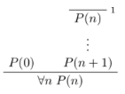

Recap from logic and sets:
- empty set Ø = {x | false}
- universal set U = {x | true}
- union A ∪ B = {x | x ∈ A or x ∈ B}
- intersection A ∩ B = {x | x ∈ A and x ∈ B}
- complement Ā = {x | x ∉ A}
- difference A \ B = {x | x ∈ A and x ∉ B}
Theorems:
- A ∩ (B ∪ C) = (A ∩ B) ∪ (A ∩ C)
- (A \ B) \ C = A \ (B ∪ C)
definitions of properties:
- reflexive: ∀x R(x,x)
- symmetric: ∀x ∀y (R(x,y) → R(y,x))
- transitive: ∀x ∀y ∀z ((R(x,y) ∧ R(y,z)) → R(x,z))
- serial: ∀x ∃y R(x,y)
- functional: ∀x ∃y (R(x,y) ∧ ∀z (R(x,z) → z=y))
partial order:
- reflexive
- transitive
- antisymmetric
total order:
- partial order
- ∀ a,b (R(a,b) ∨ R(b,a))
strict partial order: partial order but irreflexive
strict total order:
- strict partial order
- ∀ a,b (R(a,b) ∨ (a=b) ∨ R(b,a))
equivalence relation:
- reflexive (∀a, a ≡ A)
- symmetric
- transitive
Set of natural numbers is N ∈ (0,∞)
Principle of induction: let P be a property of natural numbers. Suppose P holds for zero, and whenever P holds for a natural number n, then it holds for its successor n+1. Then P holds for every natural number.
As a natural deduction rule:

Let A be any set, suppose a is in A, and g: N × A → A. Then there is a unique function f satisfying:
- f(0) = a
- f(n+1) = g(n, f(n))
Typically to prove something about a recursively defined function is to use induction.